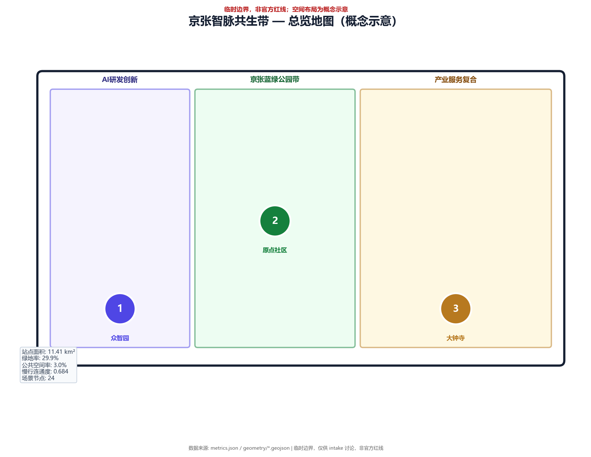
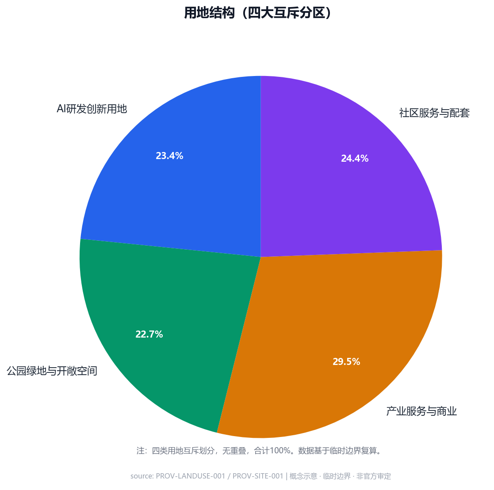
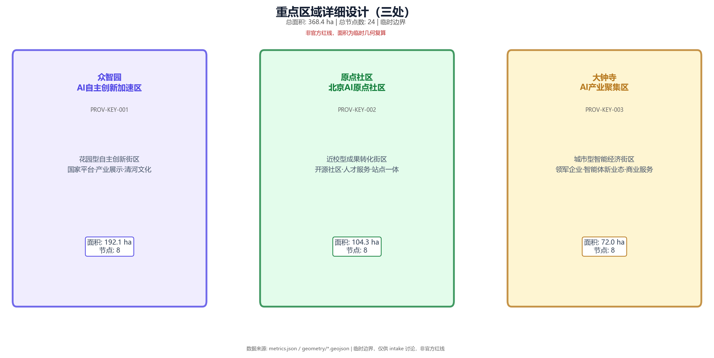
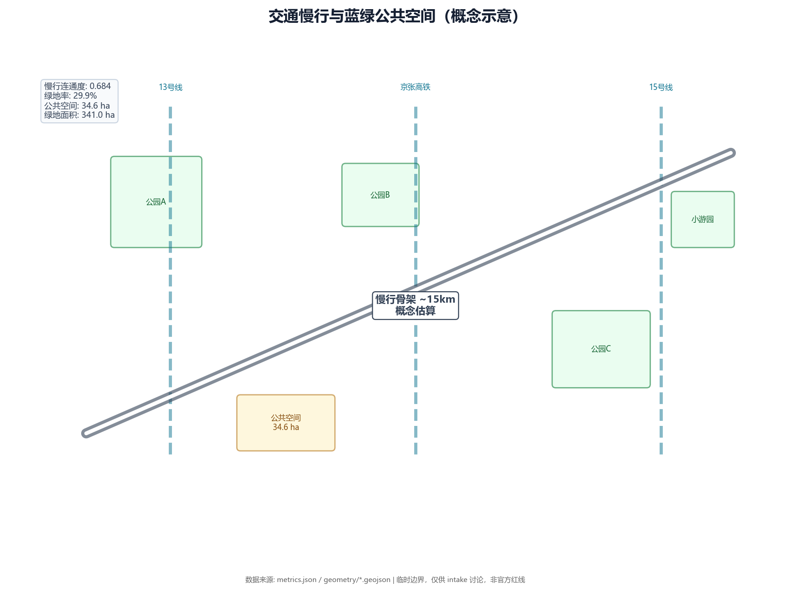
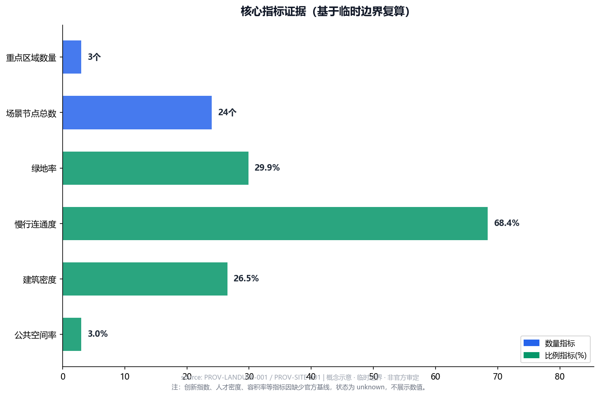
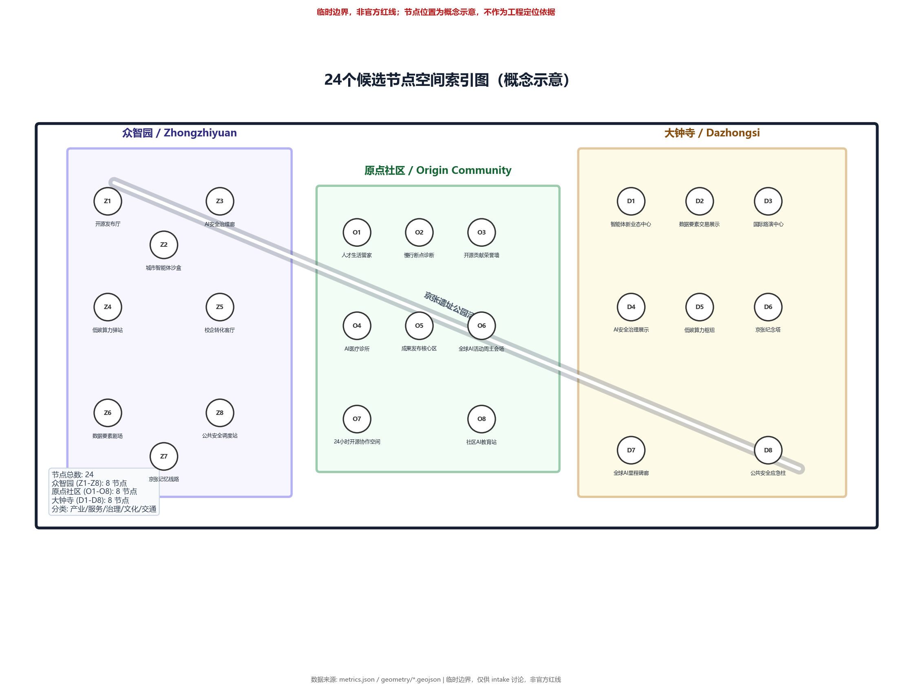

一带三核
空间结构
京张遗址公园活力带串联众智园、原点社区、大钟寺三核，蓝绿慢行复合环连接各功能区。
本页为离线电子展示成果，将总览地图、三层范围、重点区域、用地分区、交通慢行、蓝绿公共空间、AI场景节点、核心指标与自检状态整合为人类可读的视觉说明。权威数据以 GeoJSON、metrics.json、合规矩阵和自检结果为准。
「京张智脉共生带」将百年京张铁路历史文脉、中关村创新基因与AI前沿科技深度融合，构建「一带三核、多场景、全链条」的世界级AI创新生态走廊。
京张遗址公园活力带串联众智园、原点社区、大钟寺三核，蓝绿慢行复合环连接各功能区。
百年铁路工业遗产 → 中关村创新文化 → AI文明未来，三段式文化叙事体系。
覆盖产业发展、城市服务、公共治理三大领域，含开源发布、安全治理、算力驿站等。
京张AI纪念塔、开源贡献荣誉墙、全球AI里程碑廊，构建全球开发者精神地标。
以下五张核心图纸展示了方案的空间结构、用地布局、重点区域、交通慢行与指标证据。所有图纸均为离线本地资源，不依赖外部CDN或远程服务。






示意图将用地分区、交通慢行、蓝绿公共空间、建筑与更新项目、AI场景节点放在同一张证据图中，便于评审快速理解空间主线。
方案按统筹研究范围、总体设计范围、重点区域范围递进，把产业判断、城市更新和重点片区设计绑定到图层与指标。
面向 43.6 平方公里提出 AI 产业生态、三区两翼协同、未来城市形态和文化叙事。
面向 11.4 平方公里组织城市更新、用地结构、交通市政、京张遗址公园活力带。
面向三处重点片区开展详细设计，说明功能业态、建筑更新、公共空间与交通组织。
三处重点区必须有产业定位、空间策略、建筑与公共空间动作、交通接口和实施风险说明。
花园型自主创新街区。重点表达国家平台、产业展示、清河文化、对外交通和低碳交往空间。
近校型成果转化街区。重点表达高校源头创新、开源社区、人才服务、拆改留和站点一体化。
城市型智能经济街区。重点表达领军企业、智能体新业态、商业服务、绿地复合利用和路口四象限连通。
场景不是口号，应说明服务对象、空间位置、数据来源、隐私边界、人工复核和运营主体。
面向开发者、企业和高校的成果发布与模型评测节点。
在可控公共空间测试交通、服务和运维智能体。
用公开数据和人工复核识别遗址公园慢行断点。
连接居住、学习、消费、运动和社交服务。
展示标准制定、可信评测和安全治理能力。
支撑清华、北大、中科院成果转化会客与路演。
大钟寺片区的数据资产、智能终端和内容消费展示。
解释分布式能源、端侧算力与公共服务设施融合。
把铁路文脉、中关村创新文化和AI新文化串联。
组织开发者节、场景开放日、竞赛路演和城市体验路线。
compliance_matrix.json 覆盖公告 1.3、1.4、1.5 与 agent.1-agent.6；standard_matrix.json 与 design_depth_matrix.json 证明专业标准和成果深度。
来源见 sources.json、agent_taskbook.json、data/processed/agent_fact_pack.md 和 standards/references。本页不得加载 CDN、远程地图瓦片、外部脚本、外部字体、API 请求或 iframe。
待补控规、道路红线、权属、市政、文保和工程条件必须在 assumptions.json 中列明，并在正文中解释对设计结论的影响。